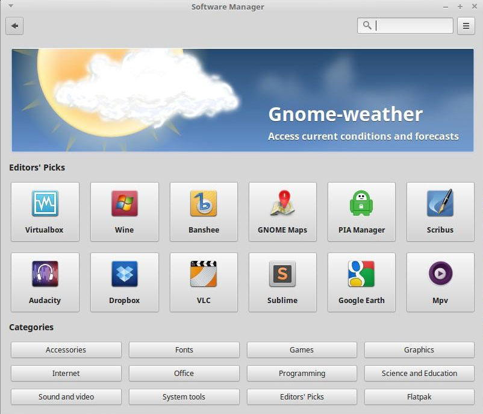

There is a lot of software available for Linux Mint. This section talks about how to install software, how to update software, how to find software, and how to remove software.
Installing software on Linux Mint MATE is very easy. There are a few different ways of doing it.
The best way to install software is via the software manager. It is very easy to find and install software.
 Linux Mint's new software manager. Source.With the software manager, you can easily search for new programs, install them, and remove them. To open the software manager, open the menu , and click "Software Manager".
Note: There may be duplicate programs for some of your searches, that does not matter, either one will work.